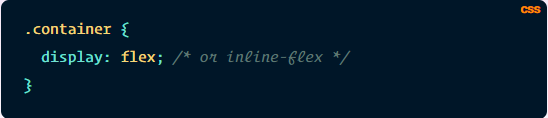
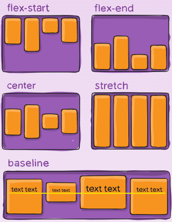
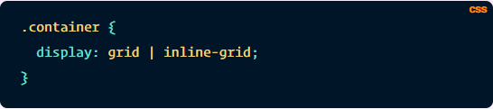
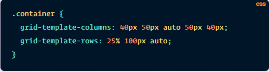
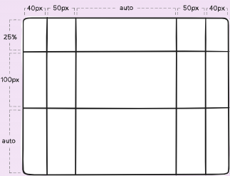
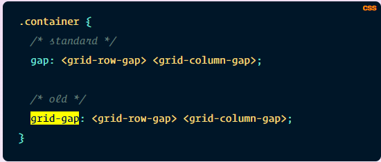

Flexbox Layout ili drugim rijecima Flexible Box je nastao 2017 godine kao jednostavniji nacin za kreiranje Layout-a(centriranje,pozicioniranje i razmjestaj u odredjenim kontejnerima).
Jedna od glavnih i mozda najboljih osobina Flexboxa je kao sto i njegovo ime kaze je da je fleksibilan.
Drugim rijecima receno prilagodjava se na velicinu i sirinu ekrana bez obzira od uredjaja na kojem ga koristili i tako sprijecava desavanje Overflowa
Pokusajte razvlaceci sirinu i visinu contenta(vidjecete da se sadrzaj skuplja-siri u odnosu na velicinu browsera u kojem se nalazi)
Flexbox kreiramo u CSS-u tako sto parentu(u primjeru ispod Container koji sadrzi Container1 i Container2 je parent) postavimo odredjeni selector( preko klase, taga ili ID-a) display na flex(inline ili block u zavisnosti od toga sta zelimo kreirati).

Za flexbox postoji stvarno puno osobina al ovde cu pokazati samo neke osnovne koje su najkorisnije za sortiranje/podesavanje blockova pomocu flexboxa
Neke od njih su:
- flex-direction
- justify-content
- align-items
- flex-wrap
Dodatna svojstva flexboxa mozete pronaci Ovde
Kreiranjem obicnog parent containera i postavljajuci mu display na flex vidimo da su containeri poredani jedan iza drugog(i to prvi div sa klasom container1 pa onda div sa klasom container2).
Kada postavimo display na flex, on po defaultu inicijalizira flex-direction na row zato dobijamo containere jedan iza drugog
U slucaju da zelimo promjeniti smijer sortiranja containera mozemo dodjeljivajuci parentu(Container) jednu od sljedecih naredbi
Flex-direction:
- row
- row-reverse
- column
- column-reverse
Justify content odredjuje poziciju tj raspored child tagova(u ovom slucaju container1 i container2).
Ako je flex-direction:row onda ce taj raspored biti po x osi
A u slucaju da je flex-direction:column onda ce taj raspored biti po y osi

Align items takodje odredjuje poziciju tj raspored child tagova(u ovom slucaju container1 i container2).
Samo sto ce ovog puta Ako je flex-direction:row onda ce taj raspored biti po x osi
A u slucaju da je flex-direction:column onda ce taj raspored biti po x osi

Po defaultu kada kreiramo flex.. child tagovi(u ovom primjeru div-ovi) ce pokusati da stanu svi u jednom redu
U slucaju da zelimo to promjeniti mozemo sa sljedecom komandom:
flex-wrap:
- nowrap(itemi ce bit u jednom redu)
- wrap(itemi ce ako ne mogu stati u browseru preci u novi red i to u smijeru odozgo prema dolje)
- wrap-reverse(itemi ce ako ne mogu stati u browseru preci u novi red u smijeru odozdo prema gore)
Primjer za flex-wrap:wrap... ostale mozete probati sami
Grid Layout ili samo skraceno Grid je takodje nastao 2017. god kao novi nacin kreiranja tabela/tabelarnog rasporeda komponenti na stranici
Razlika izmedju tabel-a u htmlu i grida je sto grid kreiramo preko CSS-a i preko css-a odredjujemo raspored celija u tabeli..
Drugim rijecima citavu tabelu(grid) od kreiranja do manipulacije radimo preko CSS-a.
Grid se vecinom koristi za organizaciju web content-a tj.uredjivanje page-a dok table se vecinom koristi za prikaz podataka(mada moze i grid-om se to isto postići)
Grid je takodje responsive isto kao i flexbox
Sto se tice osobina Grida... ona je doista obimna i da bih prosao kroz svaku osobinu mislim da bi trebalo puno vremena tako da cu odvojiti samo one "bitne" za kreiranje i manipulacijom pomocu GRID-a
Grid kreiramo na slican nacin kao i flexbox samo umjesto kljucne rijeci display:flex koristimo kljucnu rijec display:grid

Neke od osnovnih osobina koje cemo preci su:
- grid-template-columns
- grid-template-rows
- grid-gap
- grid-column-start/grid-column-end
- grid-row-start/grid-row-end
GRID-TEMPLATE-ROWS/GRID-TEMPLATE-COLUMNS
Pomoću koda grid-template-rows kreiramo broj redova koje ce nam tabela sadrzavati i velicinu svakog reda
Kao na primjer:
grid-template-rows: 20% 50px auto 20px
Ovom linijom koda kreiramo cetiri reda dimenzija
- 1.red: 20% od velicine taga(npr. div) koji sadrzi tabelu(display:grid)
- 2.red: 50px
- 3.red: auto(tj. red ce biti automatski postavljen na velicinu da popuni sve sto ostane nepopunjeno sa 1,2 i 4 redom
- 4.red: 20px
Tako isto pomocu grid-template-columns: 20% 50px auto 20px kreiracemo sve kao na primjeru iznad samo sto ce to odredjivati broj kolona i njihove velicine
GRID-TEMPLATE-ROWS/GRID-TEMPLATE-COLUMNS


Kao i sto ime kaze GAP ili u bukvalnom prevodu praznina, sluzi za dodavanje praznine(razmaka) izmedju kolona i redova(moze i pojedinacno izmedju kolona ili samo izmedju redova
GRID-GAP se nekada i inicijalizirao pomocu (npr.GRID-GAP:50px) medjutim sada je to izbaceno iz upotrebe i sintaksa je promjenjena pa se koristi samo GAP dok je naziv ostao GRID-GAP(valjda da se zna da se odnosi na grid)
Prva vrijednost odredjuje razmak izmedju redova dok druga razmak izmedju kolona

GRID-COLUMN-START/END i GRID-ROW-START/END
GRID-COLUMN-START i GRID-COLUMN-END je slicna stvar kao u table-u colspan samo sto ovde imamo pocetnu vrijednost kao i konacnu. tj unosimo od koje kolone ce poceti prosirivanje i na kojoj ce zavrsiti s prosirivanjem odredjena celija
Takodje GRID-ROW-START i GRID-ROW-END je slicno sto u table-u rowspan samo sto i ovde unosimo pocetnu i krajnju vrijednost koliko ce se neka celija prosiriti
Za vise informacija o samom gridu mozete pronaci Ovde